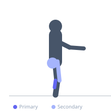
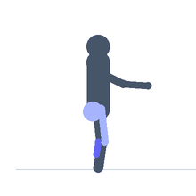

Exercise guide / Double-Under
Double-Under
The double-under is an advanced jump rope skill in which the rope passes under the feet twice in a single jump, requiring a higher jump and faster rope rotation than a standard single-under. It significantly elevates the cardiovascular demand over single-unders, while also training rope timing, wrist speed, and the explosive ankle and calf plantarflexion needed to achieve sufficient jump height. Double-unders are a standard exercise in competitive functional fitness.
Primary muscles
gastrocnemius medial
soleus
Secondary muscles
rectus femoris
gluteus maximus
Stabilizers
tibialis anterior
transverse abdominis
Equipment
No Equipment (Bodyweight)


Starting position
- Stand upright with the jump rope behind the heels, one handle in each hand.
Setup
- Use a speed rope with handles appropriate for double-under rotation. The rope should be slightly shorter than used for single-unders.
Steps
- Step 1: Begin with a standard single-under rhythm to establish timing.
- Step 2: On a chosen jump, explode upward more powerfully than a single-under to achieve greater jump height.
- Step 3: Simultaneously accelerate wrist rotation to pass the rope under the feet twice before landing.
- Step 4: Land softly on the balls of the feet with slightly bent knees.
- Step 5: Return to the standard rhythm or continue consecutive double-unders.
Coaching cues
- Jump straight — no piking
- Flick the wrist fast — not the arms
- Stay relaxed and trust the rhythm
Breathing
- Breathe continuously. The higher metabolic demand requires efficient breathing rhythm.
Range of motion
- Enough jump height for the rope to pass twice — typically 10–15 cm off the floor.
Tempo
- Typically programmed in sets of 50–100 reps unbroken, or for time intervals.
Common mistakes
- Piking the hips — kicking the heels back instead of jumping straight up
- Moving the arms wide to slow the rope — wrists should do the work
- Panicking and breaking rhythm — stay composed and consistent
Safety
- High Achilles and calf demand — do not progress volume too rapidly.
- Master single-unders and consistent rhythm before attempting.
Training
- endurance: 20–100 reps
- endurance: 3–8 sets
- Rest: {'endurance': 60}